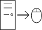
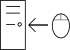

Universal Serial Bus
Hinweis:
Der Autor kannte sich bei Erstellung des Artikels nicht besonders mit dem Thema aus. Da dieses Thema aber dringend nach einem Artikel verlangte (z. B. aufgrund eines Eintrags in der TODO-Liste), hat er sich dennoch entschieden, seine Kenntnisse niederzuschreiben.
Wenn du dich mit diesem Thema einigermaßen auskennst, dann bist du jetzt aufgerufen, diesen Artikel zu erweitern und/oder zu korrigieren (oder natürlich diesen Hinweis zu entfernen, wenn du den Artikel für korrekt befindest)!
Achtung!
An diesem Artikel wird derzeit vor allem von XanClic aktiv gearbeitet. Melde dich daher entweder im IRC oder auf der Diskussionsseite, bevor du ihn veränderst (wenn ich nicht im IRC bin, dann kannst du ihn auch verändern, weil ich dann sehr wahrscheinlich gar nicht online bin).
| Diese Seite oder Abschnitt ist zwar komplett, es wird aber folgende Verbesserungen gewünscht: Nein, sie ist noch nicht komplett, man kann es aber schonmal sagen: Low- und Full-Speed werden hier detailliert beschrieben, High-Speed in den meisten Fällen auch relativ genau, wäre aber zu verbessern. Zu SuperSpeed jedoch fehlt jegliche Information (außer den bekannten Consumerinfos, die man auch von Wikipedia bekommen kann), das wäre aber schon nett. Hilf Lowlevel, den Artikel zu verbessern. |
Der Universal Serial Bus (kurz USB) ist ein Bus zur Verbindung von Geräten mit einem PC und wird von praktisch jedem modernen Computer unterstützt. USB ist abwärtskompatibel, d. h., dass man lagsame USB 1.0-Geräte an den schnelleren USB 2.0 oder 3.0 anschließen kann und umgekehrt.
Inhaltsverzeichnis
- 1 Einsatzgebiete
- 2 Spezifikationen
- 3 Vorwort
- 4 Überblick
- 5 Elektrische Hintergründe
- 6 Spezielle Ereignisse
- 7 Protokoll
- 8 USB-Transfer
- 9 Zusammengesetzte Transfers
- 10 Controltransfers
- 11 Übersetzung
- 12 Links
- 13 Literatur
Einsatzgebiete
USB ist sehr vielseitig verwendbar, es eignet sich z. B. für externe Festplatten, Flashspeicher (USB-Sticks), Drucker, Kartenleser, Multimediageräte, HID-Geräte und vieles mehr. Ursprünglich wurde es für langsame Geräte wie Drucker, Tastatur oder Maus entworfen, mit den Geschwindigkeitsklassen High-Speed (seit USB 2.0) und SuperSpeed (seit USB 3.0) jedoch eignet es sich auch für Geräte, die eine höhere Bandbreite benötigen, wie Festplatten oder Webcams.
Spezifikationen
Für alle USB-Spezifikationen gilt:
- Spannung: 5 V
- Stromstärke: 100 mA (bei USB 3.0 150 mA); nach besonderer Freigabe bis zu 500 mA (bei USB 3.0 900 mA)
USB 3.0
USB 3.0 ist noch sehr spärlich verfügbar. Erste Spezifikationen gab es 2008, USB 3.0 erlaubt eine Übertragungsrate von 5,0 GBit/s (Super-Speed) was durch die 8b10b-Codierung 500 MByte/s Brutto-Transferrate ergibt. Diese Datenrate steht, im Gegensatz zu USB 1 und USB 2, in beiden Richtungen (vom Host zum Device und vom Device zum Host) gleichzeitig zur Verfügung, USB 3 ist vollduplex und nicht mehr halbduplex wie seine Vorgänger. Zudem kann ein Gerät auf Anfrage bis zu 900 mA statt der bisherigen 500 mA erhalten. Damit lassen sich problemlos USB-Festplatten ohne zusätzliche externe Stromquelle anschließen.
USB 2.0
USB 2.0 wurde 2000 veröffentlicht und bot erstmals "High-Speed" mit einer Übertragungsrate von 480 MBit/s was durch das Bitstuffing etwa 50 bis 55 MByte/s Brutto-Transferrate ergibt.
USB 1.1
USB 1.1 wurde 1998 veröffentlicht und behob einige Fehler und Unklarheiten von USB 1.0.
USB 1.0
USB 1.0 wurde 1996 veröffentlicht und diente (wie auch noch heute) zum Anschluss von Peripheriegeräten an den PC. USB 1.0 definiert zwei Übertragungsgeschwindigkeiten mit 12 MBit/s (Full-Speed) und 1,5 MBit/s (Low-Speed) was durch das Bitstuffing etwa 1,3 bis 1,4 MByte/s bzw. ca. 135 kByte/s Brutto-Transferrate ergibt. Aufgrund dieser langsamen Datenübertragung eignet sich USB 1 kaum zum Anschluss von Festplatten, Kameras oder anderen Geräten, die größere Datenmengen transportieren.
Vorwort
Worum es in den folgenden Abschnitten geht
Die folgenden Abschnitte sollen eine erschöpfende Abhandlung und auch in gewisser Weise ein Nachschlagewerk über den USB sein. Sie handeln sowohl vom für den Entwickler eher uninteressanten elektrischen Teil, belegen diesen auch mit Beispielen, als auch von abstrakteren Objekten wie USB-Paketen und ganzen Transfers. Kurzum: Dieser Artikel soll den USB in seiner ganzen Fülle behandeln, bewusst oft sehr nah an der Hardware – schließlich ist das hier das Lowlevel-Wiki und viele Betriebssystemprogrammierer führen als Grund für ihre Motivation an, dass sie die Hardware im kleinsten Detail kennenlernen wollen.
Außerdem ist USB ein derartig komplexes Thema, dass es nicht genügen kann, eine Einführung zu lesen, etwas Code zu kopieren und dann nach und nach alles zu lernen: Schon der allererste Transfer fordert die Verwendung der meisten der mannigfaltigen Aspekte des USBs. Daher geht es hier vor allem darum, zu verstehen und nicht, Beispielcode zu sehen.
Worum es nicht geht
Hier geht es nicht um die Programmierung des USB. So wie die Artikel Ethernet und RTL8139 getrennt sind, so ist auch dieser Artikel von den Artikeln für die Hostcontroller getrennt, die die einzelnen Transfers initiieren und steuern. Hier wird also nur vermittelt, was im Endeffekt auf dem Bus elektrisch passiert und was diese Signale bedeuten, nicht jedoch, wie man sie erzeugt. Dazu müssen die Artikel zu den entsprechenden Hostcontrollern konsultiert werden:
Überblick
Bevor wir zum technischen Teil kommen, zuerst einmal ein Überblick über die Organisation des USB.
Geräte
Logischerweise gibt es am USB Geräte. Das sind gewissermaßen Objekte, mit denen man kommunizieren kann. Jedes Gerät erhält eine am jeweiligen USB eindeutige Nummer von 1 bis 127 (0 ist für einen besonderen Zweck reserviert). Die USB-Geräte werden nochmals in Functions und Hubs unterteilt. Eine Function kann eine bestimmte Aufgabe erfüllen, z. B. ist dies ein Massenspeicher, ein Drucker oder eine Webcam. Ein Hub hat auch eine Aufgabe, aber eine ganz spezielle: Er leitet die Daten, die er an seinem USB-Anschluss (Upstreamport) erhält, an neue Ports (Downstreamports) weiter. So erhält der USB eine baumartige Struktur, die Wurzel ist der sogenannte Roothub, die einzelnen Verzweigungen werden durch Hubs gebildet. Es ist festgelegt, dass maximal fünf Hubs hintereinander geschaltet werden dürfen. Dies findet seine Begründung darin, dass für einige Übertragungen auf eine Antwort gewartet wird und ein Timeout benötigt wird, falls keine Antwort erfolgt. Dieses Timeout wurde so festgelegt, dass ein Gerät genügend Zeit hat, die Antwort zu senden, nachdem die Übertragung fünf Hubs und sechs Kabel durchquert hat und die Antwort diese Strecke nochmals zurücklegen muss. Hängt man also einen weiteren Hub an, so kann es passieren, dass das Gerät eine Antwort sendet, diese aber ignoriert wird, da sie bereits über der Timeoutzeit liegt.
Host
Der Host bildet den Busmaster eines USB. Er ist der einzige Teilnehmer, der Transaktionen initiieren darf, Geräte dürfen dies nicht von sich aus. Er besitzt keine Adresse, stattdessen wird er nur per Richtung adressiert: IN bedeutet immer in Richtung Host, OUT in Richtung Gerät (wobei das Gerät dann jeweils mit seiner Adresse identifiziert wird).
Konfigurationen
In verschiedenen Situationen muss sich ein Gerät unterschiedlich verhalten. Denkbar wäre zum Beispiel ein Gerät, das 500 mA vom Bus benötigt, um zu funktionieren. Hat der Host allerdings keine Möglichkeit, diese 500 mA bereitzustellen (z. B. hängt das Gerät hinter einem Hub, der sich ebenfalls mit Strom vom Bus versorgt und so maximal 100 mA pro Port bereitstellen kann). Obwohl das Gerät dadurch vielleicht keine Möglichkeit, seine eigentliche Funktion auszuführen, muss es trotzdem aktiv am Bus hängen. Das heißt, es kann zum Beispiel einfach nur darauf warten, dass es doch noch 500 mA erhält.
Dieses Reagieren auf unterschiedliche Situationen wird mit Konfigurationen erreicht. Jedes Gerät muss eine Default-Konfiguration anbieten, in der es nur 100 mA verbraucht und kann beliebig viele weitere Konfigurationen anbieten, die verschiedene Funktionen erlauben. Zu einem bestimmten Zeitpunkt kann ein Gerät nur eine Konfiguration besitzen.
Interfaces
Es gibt sogenannte Composite Devices, welche mehrere Funktionen in sich vereinen. Eine Webcam beispielsweise hat häufig zwei Funktionen: Sie kann sowohl Bild als auch Ton aufnehmen. Nun gibt es drei Möglichkeiten, dies zu implementieren. Entweder man erstellt ein gerätespezifisches Protokoll und liefert für dieses Gerät Treiber aus – schlecht, da man erst Treiber schreiben muss und außerdem z. B. Linuxnutzer in die Röhre gucken könnten. Zweite Möglichkeit: Man setzt auf Standardfunktionen, hier wären die Video- und die Audiogeräteklasse sinnvoll. Dummerweise sind das aber zwei verschiedene Klassen. Man müsste also zwei verschiedene Geräte implementieren (oder zumindest zwei verschiedene logische Geräte, eventuell sogar mit integriertem Hub, sodass alles vollkommen transparent für das System erscheint). Das Problem hierbei ist offensichtlich: Relativ hohe Hardwarekosten, da es ja zwei getrennte USB-Geräte sind und außerdem noch ein zusätzlicher Hub, wenn zwei Upstreamports vermieden werden sollen. Die Lösung liegt in der dritten Möglichkeit, man verwendet Interfaces.
Jede Konfiguration kann mehrere Interfaces verwenden, wobei jedes Interface zu einer USB-Klasse gehören kann (oder auch nicht). So ist es für die Webcam möglich, ein Audio- und ein Videointerface bereitzustellen, die dann gleichzeitig verwendet werden können. Diese Möglichkeit besticht einerseits durch die Verwendung allgemein unterstützter Klassen, andererseits aber auch durch günstigere Hardware und auch ein schöneres Design.
Zu einem bestimmten Zeitraum besitzt ein Gerät alle Interfaces, die durch die aktuelle Konfiguration aktiviert sind, gleichzeitig.
Endpunkte
Endpunkte entsprechen sozusagen den Ports von Netzwerkprotokollen. Jedes Gerät besitzt innerhalb einer Konfiguration eindeutige Endpunkte, mit denen der Host kommunizieren kann. 31 verschiedene Endpunkte sind gleichzeitig möglich, davon ist einer (Endpunkt 0, EP0) jedoch als Kontrollendpunkt reserviert (Low-Speed-Geräte dürfen nur drei Endpunkte nutzen). Ein Interface gibt immer an, welche Endpunkte es nutzt. Deren Nummern müssen innerhalb einer Konfiguration eindeutig sein.
Pipes
Obwohl es im Grunde nur einen physischen Kommunikationskanal auf dem USB gibt, der von allen Geräten genutzt wird und daher aufgeteilt werden muss, gibt es mehrere logische Kanäle, sogenannte Pipes. Eine Pipe ist eine Verbindung vom Host zu einem bestimmten Endpunkt eines bestimmten Geräts, sie wird also durch die Geräteadresse und die Endpunktnummer eindeutig bestimmt. Dieser Endpunkt und seine Rolle bestimmen dann auch den Typ der Pipe (also den Transfertyp).
Eine besondere Rolle spielt die Default Control Pipe, die zur Konfiguration des Geräts dient und bei jedem Gerät vorhanden sein muss. Sie entspricht einer Verbindung zum EP0. Sie ist verfügbar, sobald das Gerät Strom erhält und einen USB-Reset empfangen hat. Auch wenn schwerwiegende Fehler aufgetreten sind, muss sie immer erreichbar und ansprechbar sein.
Elektrische Hintergründe


Schneidet man ein USB-Kabel wie z. B. ein altes Handykabel auf, so wird man darin vier weitere Kabel entdecken, meist sind sie rot, schwarz, grün und weiß. Diese Farben stehen für die jeweilige Bedeutung:
| Farbe | Name | Bedeutung |
|---|---|---|
| Rot | VBUS | Betriebsspannung (5 Volt) |
| Schwarz | Ground | Masse (also 0 Volt) |
| Grün | D+ | Eine der beiden Datenleitungen |
| Weiß | D- | Die andere Datenleitung |
Die Anschlüsse VBUS und GND bilden für das USB-Gerät also eine Spannungsquelle, mit D+ und D- werden Daten seriell übertragen. Ist das Potential von D+ höher als das von D-, so liegt auf dem Bus eine differentielle 1 an, ist es umgekehrt, so handelt es sich um eine differentielle 0. Der Unterschied muss dabei jeweils mindestens 200 mV betragen.
Wenn kein Gerät am USB angeschlossen ist, befindet sich auf beiden Datenleitungen die gleiche Spannung, ist sie hoch, bezeichnet man dies als SE1 (Single Ended 1), ist sie niedrig, so wird dies SE0 (Single Ended 0) genannt. Wie wird nun das Anschließen eines Geräts an einem USB-Port erkannt? Logischerweise muss dazu das Gerät dafür sorgen, dass die beiden Leitungen ein unterschiedliches Potential erhalten. Damit erhält der entsprechende Hub auch sofort eine Information zur Geschwindigkeit des Geräts, dies funktioniert so:
- Low-Speed-Geräte müssen die D--Leitung auf 3,3 V hochziehen (mit einem 1,5-kΩ-Widerstand).
- Full-Speed-Geräte hingegen ziehen die D+-Leitung hoch.
High-Speed-Geräte sind nicht in dieser Liste aufgeführt, sie melden sich zunächst als Full-Speed-Geräte (jedes High-Speed-Gerät muss auch im Full-Speed-Modus arbeiten, ob es seine eigentliche Funktion dann auch erfüllen kann, sei dahingestellt).
Diese Einteilung führt natürlich auch zu Unterschieden in der Handhabung von Low- und Full-Speed-Geräten: Wenn der Hub keine Spannung treibt, so stellt sich der Idle-Zustand ein, das heißt, bei Low-Speed-Geräten gibt es eine differentielle 0 (D- > D+) und bei Full-Speed-Geräten eine differentielle 1 (D+ > D-). Dieser Zustand wird auch J-State genannt, der jeweils andere ist der K-State. Bei letzterem muss der Hub aktiv eine Spannung durch beide Datenleitungen treiben, um die vom Gerät eingestellte Spannung zu invertieren.
Im High-Speed-Betrieb ist das ein bisschen anders, hier bedeutet Idle, dass beide Leitungen niedrig sein müssen (also SE0). J und K entsprechen dem Full-Speed-Modus (wobei sowohl bei J als auch bei K aktiv ein Signal getrieben werden muss). Außerdem sind die Spannungen unterschiedlich: Während eine hohe Spannung bei Low-/Full-Speed eine Spannung zwischen 2,8 und 3,6 V bedeutet (und eine niedrige eine zwischen 0 und 0,3 V), beträgt bei High-Speed eine hohe Spannung 0,36 bis 0,44 V (und eine niedrige -0,01 bis 0,01 V).
Auf dem USB kann es also vier Zustände geben: SE0 (D+ = D-, beide niedrig), SE1 (D+ = D-, beide hoch), J (bei Low-Speed D- > D+, bei Full-/High-Speed D+ > D-) und K (bei Low-Speed D+ > D-, bei Full-/High-Speed D- > D+). Dabei werden für die Datenübertragung selbst nur der J- und K-State verwendet, die anderen sind für das Anzeigen besonderer Ereignisse von Bedeutung.
Datenübertragung
Daten werden, bevor sie über den USB verschickt werden, doppelt codiert:
Zuerst findet ein sogenanntes Bitstuffing statt. Das heißt, nach sechs aufeinander folgenden Einsen im eingehenden Datenstrom wird automatisch eine Null eingefügt (unabhängig davon, ob das Bit danach wieder eine Eins wäre). Dies mag merkwürdig erscheinen, erklärt sich jedoch aus der zweiten Verschlüsselung, der NRZI-Kodierung.
NRZI (Non Return to Zero Invert) bedeutet, dass nach jeder 0 der Zustand auf der Datenleitung invertiert wird und nach jeder 1 so gelassen wird, wie er ist. Dies dient dazu, dass Geräte allein aus diesem Wechsel der Spannung den USB-Takt verfolgen können. Daraus erklärt sich auch das Bitstuffing: Viele aufeinander folgende Einsen führen zu einem konstanten Zustand der Datenleitungen, dies muss jedoch verhindert werden, eben damit die Geräte nicht aus dem Takt geraten. Dazu wird dann zwangsweise ein Null eingefügt, um einen Zustandswechsel zu erreichen.
Möchte man also z. B. einen Text wie „Lowlevel?“ per USB verschicken, so sähe das folgendermaßen aus:
Zunächst müssen die Zeichen in einen Bitstrom umgewandelt werden. Da wir ASCII verwenden, sehen die Bytes zuerst so aus:
0x4C 0x6F 0x77 0x6C 0x65 0x76 0x65 0x6C 0x3F
Wir nehmen Little Endian (s. auch Bit- und Bytereihenfolge), also wird daraus der Bitstrom:
001100101111011011101110001101101010011001101110101001100011011011111100
Jetzt zum Bitstuffing. Wir haben nur einmal im Bitstrom sechs aufeinander folgende Einsen und das ist das Fragezeichen (deshalb habe ich es auch im Beispiel benutzt). Obwohl direkt danach sowieso eine Null käme, müssen wir eine weitere einfügen, denn der Empfänger könnte sonst in manchen Fällen (hier wäre es wohl dank der zweiten Null danach eindeutig) nicht eindeutig wissen, ob die 0 von einem Bitstuff herrührt oder einfach so da war. Unsere Daten erfahren also eine klitzekleine Veränderung:
0011001011110110111011100011011010100110011011101010011000110110111111000
Jetzt noch zum NRZI. Bevor Daten gesendet werden, befindet sich die Leitung im Idle-Zustand (nehmen wir zumindest an), das heißt, wir haben am Anfang ein J. Hier jetzt der Zustand der Leitung, das erste Zeichen kennzeichnet ihn vor dem Senden, das letzte danach (somit haben wir 74 Zeichen für 73 Bits):
JKJJJKJJKKKKKJJJKKKKJJJJKJKKKJJJKKJJKJJJKJJJKKKKJJKKJKKKJKJJJKKKJJJJJJJKJK
Vielleicht ist es so deutlicher zu erkennen (- ist J, _ ist K):
-_---_––_____---____----_-___---__--_---_---____--__-___-_---___-------_-_
Ob J oder K der differentiellen 1 bzw. 0 entspricht, hängt dann von der Geschwindigkeit des Geräts ab.
Selbstversuch
Um den ganzen Spaß einmal selbst zu testen, bedarf es nicht viel – natürlich gebe ich hier keine Garantie dafür, dass es funktioniert oder dafür, dass nichts kaputt geht, also:
Warnung
Ich garantiere weder dafür, dass dieses Experiment funktioniert, noch dafür, dass eure Hardware bzw. die hier verwendeten Bauteile unbeschädigt bleiben – dieser Versuch läuft komplett auf eigene Gefahr!
Nun gut, wer jetzt noch mutig genug ist, um diese Gefahr auf sich zu nehmen, der benötigt:
- Ein altes USB-Kabel, das nicht mehr benötigt wird
- Ein relativ scharfes Messer
- Eine Möglichkeit zum Verbinden von Kabeln (Steckbretter, Löten, der Fantasie sind hier kaum Grenzen gesetzt)
- Einen Widerstand, der zumindest in die Nähe von 1,5 kΩ kommt sowie einen, der mindestens 200 Ω besitzen sollte (aber nicht viel mehr)
- Einen Transistor (könnte auch ohne gehen)
- Eine LED
So teuer sollte das also nicht sein, wenn was kaputt geht, dann ist das wohl die LED. Heutige Hostcontroller besitzen zudem Überspannungsschutz, sodass auch hier nichts schiefgehen sollte.
Der USB-Verkehr ist natürlich viel zu schnell, um ihn tatsächlich beobachten zu können. Aber einige Teile kann man sichtbar machen. So dauert z. B. der Reset eines Geräts mindestens 50 ms, während dieser Zeit wird ein SE0 auf dem Bus getrieben. Dies könnte man also tatsächlich erkennen.
- Zuerst muss das Kabel aufgeschnitten werden. Darin müssten sich die oben genannten vier farbigen Kabel befinden, vermutlich von Metallfäden und anderen Materialien abgeschirmt. Das Kabel muss nun so aufgeschnitten werden, dass die vier Einzelkabel ziemlich unabhängig voneinander beweglich sind.
- Nun muss zuerst der 1,5-kΩ-Widerstand das rote (VBUS) und das grüne Kabel (D+) verbinden, um ein Full-Speed-Gerät vorzutäuschen. Man kann natürlich auch das rote und das weiße Kabel (D-) verbinden, dann handelt es sich um ein Low-Speed-Gerät. Zum Testen kann man theoretisch schon den USB-Stecker einstecken und das Betriebssystem sollte ein neues USB-Gerät melden (welches sich aber natürlich als fehlerhaft erweist), unter Linux sollte dies z. B. in der per Alt+F10 zu erreichenden Console zu beobachten sein (oder auch per dmesg | tail -f).
- Um jetzt tatsächlich etwas zu sehen, brauchen wir noch Transistor und LED. Die Basis des Transistors kommt an D+ (oder D-, je nachdem, wo der Widerstand von VBUS endet), der Kollektor nach VBUS und der Emitter wird an die LED angeschlossen (möglichst in Durchlassrichtung, am Emitter liegt der Pluspol). Die andere Seite der LED wird dann an den zweiten Widerstand, unseren Vorwiderstand, angeschlossen. Dessen anderes Ende kommt dann an Ground. Bei einem 200-Ω-Widerstand sollten 11,5 bis 17,5 mA erreicht werden, eine normale LED nimmt 20 – aber besser zu wenig als zu viel.
Sobald man jetzt das USB-Kabel einsteckt, sollte die LED leuchten (hoffentlich nicht rauchen und stinken) und nach kurzer Zeit leicht blinken – in diesem Moment treibt der Hub die D+-Leitung (oder D-) auf 0. Bei Datenübertragungen ist dieser Zeitraum allerdings extrem kurz, sodass es sich dabei vermutlich um einen Reset mit SE0 handelt. Zusätzlich könnte man auch einen Lautsprecher statt der LED anschließen, dann sollte sich ein leichtes Summen einstellen. Dies zeigt an, dass Daten gesendet werden (bzw. nicht wirklich Daten, aber schon diese nicht-wirklich-Daten werden so oft gesendet (1 kHz), dass es für ein Summen reicht). Bei jedem Reset sollte der Lautsprecher knacken.
Spezielle Ereignisse
Reset
Für den gesamten USB steht praktisch nur eine einzige Datenleitung zur Verfügung. Deshalb muss jedes Gerät eine eindeutige Adresse erhalten, um die für es bestimmten Daten erkennen zu können, diese Adresse liegt im Bereich von 1 bis 127. Allerdings gibt es ein Problem: Wenn ein Gerät neu an den USB angeschlossen wird, müsste es bereits eine eindeutige Adresse haben, damit der Host damit kommunizieren kann. Diese Adresse wäre dem Host aber unbekannt und somit wäre keine Kommunikation möglich. Also hat man eine ganz bestimmte Adresse festgelgt, die USB-Geräte annehmen müssen, wenn sie noch nicht anders konfiguriert werden, und diese Adresse ist 0.
Nun gibt es aber weitere Fälle, in denen eine USB-Adresse nicht bekannt ist. So zum Beispiel, wenn das BIOS die USB-Geräte initialisiert und ihnen dabei schon eine neue Adresse zugewiesen hat. Diese Geräte müssen also irgendwie auf eine bekannte Adresse und vor allem in einen bekannten Zustand zurückgesetzt werden (denn das BIOS kann diese Geräte ja bereits verwendet und dafür konfiguriert haben). Natürlich könnte man den Benutzer anweisen, alle USB-Geräte in diesem Moment abzuziehen und neu anzustecken, doch das wäre wohl ziemlich nervig. Also gibt es dafür eine spezielle USB-Funktion, den Reset.
Das Resetsignal wird ausgeführt, indem beide Datenleitungen auf unter 0,3 V gezogen werden, es wird also ein SE0 auf dem USB getrieben. Sobald dieses Signal beendet wurde, befindet sich das entsprechende Gerät im Defaultzustand, das heißt, es ist nicht konfiguriert, befindet sich nicht im Suspendmodus und antwortet auf die USB-Adresse 0. Bei Hub-Ports muss der SE0-Zustand mindestens 10 ms getrieben werden, an Rootports sind 50 vorgeschrieben. Ein Reset muss von einem USB-Gerät in so gut wie jedem Zustand ausgeführt werden können (ich kenne keine Ausnahme).
Für High-Speed-Geräte hat der Reset noch eine weitere Bedeutung: Das Gerät gibt sich hier als solches zu erkennen und ermittelt, ob der Hub ebenfalls im High-Speed-Modus arbeitet. Dies geschieht folgendermaßen:
- Zuerst erkennt das Gerät den andauernden SE0-Zustand (entspricht dem Idle-Zustand und ist somit erst ab ca. 125 µs etwas besonderes) und begibt sich in den Full-Speed-Modus (falls es gerade als High-Speed-Gerät operiert).
- Jetzt wird ein sogenannter K-Chirp ausgeführt, das heißt, das Gerät treibt ein High-Speed-Signal in D-. Wenn der Hub dies nicht erkennt, bleibt eine Antwort aus und D+ und D- bleiben auf SE0. Das Gerät bleibt im Full-Speed-Modus und wartet das Ende des Resets ab.
- Befindet sich der Hub auch im High-Speed-Modus, dann treibt er abwechselnd K- und J-Chirps auf dem Bus (J-Chirp: D+ alterniert schnell), jede Sequenz dauert ca. 50 µs. Diese Chirps halten bis 100 – 500 µs vor Ende des Resets an, damit das Gerät nicht in den Suspendmodus wechselt.
- Sobald das USB-Gerät diese abwechselnden Chirps erkennt, muss es den Pull-Up-Widerstand an D+ entfernen und sich in den High-Speed-Modus begeben. Das bedeutet, dass der High-Speed-Idle-Zustand SE0 entspricht!
Suspend
Der Suspendmodus ist ein Energiesparmodus. Ein USB-Gerät muss sich nach 3 ms Idle-Zustand (also J, oder bei High-Speed SE0) in diesen Modus begeben. Dort muss es dann nach insgesamt 10 ms angelangt sein. Währenddessen darf es nur eine extrem geringe Menge an Strom verbrauchen (500 µA oder nach besonderer Freigabe 2,5 mA). Außerdem reagiert es nur auf Reset- und Resume-Signale. Letzteres dient dazu, das Gerät aus dem Suspendmodus aufzuwecken. Dies geschieht, indem für 20 ms ein K-Zustand und anschließend ein Low-Speed-EOP (End of packet) getrieben wird.. Danach hat jedes Gerät noch 10 ms Zeit, wieder in den Normalzustand zurückzukehren (allerdings müsste es sofort wieder in den Suspendmodus wechseln, wenn während dieser 10 ms mindestens 3 ms Idle-Zustand auftreten).
Remote Wakeup
Einige Geräte, wie z. B. Tastaturen oder Mäuse, können auch eigenmächtig ein Resumesignal treiben (beispielsweise bei Tastendruck oder bei einer Mausbewegung), dies wird Remote Wakeup genannt. In diesem Fall wird das Signal an den Host weitergeleitet, der dann entscheidet, welche Geräte tatsächlich aufgeweckt werden sollen.
High-Speed-Suspend
Bei High-Speed-Geräten entspricht das Suspendsignal dem Resetsignal. Das Gerät beginnt also zuerst einen Reset, indem es sich in den Full-Speed-Modus begibt. Das heißt auch, dass der Pull-Up-Widerstand an D+ angeschlossen wird. Da sich die Datenleitungen im Idle-Zustand befinden, wird diese Spannung dann auch auf den Datenleitungen zu messen sein, wenn es sich um einen Suspend handelt. Bei einem Reset hingegen treibt der Hub aktiv SE0 und somit befinden sich die Leitungen bei einem Suspend nach dem Anschluss des Pull-Up-Widerstands im J-Zustand, bei einem Reset hingegen im SE0-Zustand.
Hat das Gerät ein Reset entdeckt, so fährt es wie vorgesehen fort (s. Reset), wenn nicht, tritt es als Full-Speed-Gerät in den Suspendmodus ein, beim Resume muss es allerdings wieder in den High-Speed-Modus schalten.
Protokoll
USB gleicht weniger einem klassischen Bus wie der seriellen Schnittstelle oder der parallelen Schnittstelle, sondern eher einem Netzwerkprotokoll. Es gibt Zieladressen (könnte man als eine Art IP-Adresse werten), Endpunkte (entsprechen den von TCP oder UDP bekannten Ports) und die gesamte Übertragung findet in Paketen gekapselt statt. Allerdings besitzt USB eine wichtige Eigenschaft eines Bus: Es gibt Busmaster, und zwar genau einen. Dieser wird im Allgemeinen Host genannt, nur er darf Übertragungen initiieren – kein Gerät darf dies (im klassischen USB). Damit haben wir uns schon mal einen groben Überblick verschafft und können jetzt voll einsteigen.
Bit- und Bytereihenfolge
Sowohl bei mehreren Bits als auch bei mehreren Bytes wird Little Endian verwendet (also zuerst das LSb bzw. LSB und zuletzt das MSb bzw. MSB). Dies entspricht der Endianess von x86-Prozessoren, sodass hier bei Betriebssystemen für diese Architektur kein Umrechnen nötig sein sollte.
Organisation
Übertragungsarten
Es gibt vier verschiedene Möglichkeiten, Daten über den USB zu transportieren:
Control
Controltransfers dienen dazu, ein USB-Gerät einzurichten. Es ist garantiert, dass die Daten so ankommen wie sie gesendet wurden und es ist auch garantiert, dass das USB-Gerät die Anfrage verstanden und verarbeitet hat. Für sie gibt es keine garantierte Bandbreite.
Bulk
Mit Bulktransfers können große Datenmengen sicher übertragen werden, auch hier kommen die Daten also in jedem Fall und so, wie sie abgeschickt wurden, an. Andererseits ist auch hier nicht garantiert, dass der Transfer stattfindet, wenn er initiiert wird: Bulktransfers haben meist eine noch geringere Priorität als Controltransfers.
Interrupt
Da es wie gesagt nur einen Busmaster auf dem USB gibt, dürfen Geräte von sich aus keine Transfers initiieren – schlecht für Tastaturen, Mäuse und Co., die so nur schwer Interrupts auslösen können. Die Lösung liegt in einer Art Polling, den Interrupttransfers: Sie werden regelmäßig ausgeführt und so kann das Gerät dem System Informationen über neue Ereignisse mitteilen (oder den Transfer abbrechen, wenn nichts passiert ist). Sie eignen sich nur für kleine Datenmengen, allerdings ist auch bei ihnen die Übertragung sicher und außerdem besitzen sie eine garantierte Bandbreite (werden also vor Control- und Bulktransfers ausgeführt).
Isochronous
Die Transfers mit dem lustigen Namen, bei dem man erstmal ein paar Monate braucht, um sich daran zu gewöhnen, bilden die letzte Gruppe. Sie sind gewissermaßen die Echtzeitbetriebssysteme unter den USB-Transaktionen: Bei ihnen kommt es nicht darauf an, dass die Daten korrekt ankommen, sondern nur darauf, dass sie überhaupt irgendwie ankommen und zwar eine garantierte Datenmenge pro Zeiteinheit. Dies ist zum Beispiel bei Mikrofonen oder Kameras wichtig: Ein Mikrofon besitzt beispielsweise eine Samplerate von 48 kHz und eine Sampletiefe von 16 Bit (Mono). Dann entstehen pro Millisekunde 96 Bytes Daten, diese müssen irgendwie zum Host kommen. Dabei kommt es nicht darauf an, ob alle Bits korrekt sind, im schlimmsten Fall knackt es eben zwischendurch, sondern darauf, dass diese Daten auf jeden Fall gesendet werden. Deshalb besitzen Isochronous- zusammen mit Interrupttransfers die höchste Priorität und eine garantierte Bandbreite.
Zusammenfassung
Hier nochmal alles auf einen Blick:
| Transfertyp | Datenmenge | Datensicherheit | Bandbreite | Typischer Einsatz |
|---|---|---|---|---|
| Control | Gering | Sehr hoch | Kaum garantiert | Abfragen/Beeinflussen des Gerätezustands |
| Bulk | Hoch | Hoch | Nicht garantiert | Massenspeicher, allg. unregelmäßige sichere Übertragung großer Datenmengen |
| Interrupt | Sehr gering | Hoch | Garantiert | HIDs, regelmäßige Übertragung von Statusmeldungen |
| Isochronous | Hoch | Keine | Garantiert | Echtzeitanwendungen, regelmäßige unsichere Übertragung großer Datenmengen |
Interrupt- und Isochronoustransfers fasst man auch als periodische Transfers zusammen, Bulk- und Controltransfers werden (seltener) als asynchrone Transfers bezeichnet.
Frames
Die USB-Zeit wird in Abschnitte, genannt Frames unterteilt. Solch ein Frame dauert immer eine Millisekunde, er beginnt mit einem SOF-Paket (Start of frame). Dies garantiert einerseits, dass ein Gerät nicht in den Suspendzustand gerät, andererseits aber auch, dass die Bandbreite sinnvoll aufgeteilt werden kann. So kann in jedem Frame eine gewisse Zeit für periodische Transfers reserviert werden, der Rest wird dann mit asynchronen Transfers aufgefüllt. Frames gibt es nur bei Full- und High-Speed-Geräten, Low-Speed-Geräte erhalten keine Frames (da sie nur Control- und Interrupttransfers ausführen dürfen, fällt das Scheduling hier nicht schwer), sondern sogenannte Low-Speed-Keepalives. Diese besitzen an sich keine Funktion, sie sorgen nur für etwas Busaktivität und verhindern so, dass das Gerät in den Suspendmodus schaltet.
Im High-Speed-Betrieb gibt es zusätzlich noch sogenannte Microframes. Während eines Frames gibt es acht Microframes, welche somit jeweils 125 µs dauern. Jeder Microframe beginnt mit einem SOF-Paket. Dabei ändert sich die dort eingetragene Framenummer (zwischen 0 und 2047) jedoch nur alle 8 Microframes (also bei jedem vollen Frame).
Flusskontrolle
Mit Flusskontrolle meine ich hier die Möglichkeit herauszufinden, ob Daten gesendet werden dürfen oder nicht. Hier verwenden Full- und High-Speed unterschiedliche Konzepte (Low-Speed gar nicht, weil dies nur für Bulk sinnvoll ist und Low-Speed-Geräte keine Bulktransfers benutzen können).
Full-Speed
Bei Full Speed geht alles ziemlich einfach, dafür aber auch ineffizient vor sich: Der Host sendet ein Datenpaket, kann das Gerät dieses annehmen, so sendet es ein ACK, sonst kommt ein NAK und der Host sendet es noch einmal. Das Problem hierbei ist, dass das Gerät wohl schon zu Beginn weiß, dass es die Daten nicht annehmen kann, aber dennoch erstmal das gesamte Paket abwarten muss, ehe es sie abweisen darf. Dies kostet natürlich unnötig viel Zeit.
High-Speed
Dieses Konzept wurde bei High-Speed-Transaktionen überarbeitet. Hier schickt der Host zuerst einmal das Datenpaket, kann das Gerät dieses nicht annehmen, antwortet es mit NAK. Wenn es das Paket empfangen kann, antwortet es mit ACK, wenn das Gerät danach noch ein Paket aufnehmen kann oder mit NYET, wenn nicht. Hat der Host ACK empfangen, so sendet er das nächste Paket.
Hat er allerdings ein NYET oder ein NAK erhalten, dann beginnt er nun mit PING-Paketen. Das Gerät muss mit NAK antworten, wenn es immer noch kein Paket empfangen kann, oder mit ACK, wenn es nun bereit ist. Dies verringert die Anzahl an sinnlos gesendeten Daten natürlich erheblich. Das Gerät kann hierbei sogar angegeben, wann das nächste PING-Paket gesendet werden soll (der Host muss dies aber nicht befolgen).
Aufbau eines USB-Pakets
SOP
Jedes USB-Paket beginnt mit einem SOP (Start of packet), welches benutzt wird, um die Übertragung von Daten anzuzeigen. Dazu werden die Adressleitungen invertiert, sodass ein K-Zustand entsteht. Danach wird die Leitung wieder auf J gelassen, anschließend folgen noch zwei KJ-Paare und das ganze endet mit zwei Bitzeiten K (eine Bitzeit ist der kleinste Übertragungszeitraum und beträgt bei Full-Speed beispielsweise meistens 83,3 ns ((12 MHz)⁻¹)). Dieses Feld wird auch als SYNC-Feld bezeichnet und entspricht somit KJKJKJKK (vorher gab es auf der Leitung ein J). Dies gilt bei Full- und Low-Speed, bei High-Speed hingegen handelt es sich um 15-KJ-Paare und zwei K (also KJKJKJKJKJKJKJKJKJKJKJKJKJKJKJKK), davon darf jeder Hub vier Bits vom Anfang fallen lassen (sodass bei einer maximalen Hubtiefe von 5 Hubs 5 KJ-Paare und KK, also KJKJKJKJKJKK übrig bleiben). Dem Gerät ist ja egal, wie lange das Feld dauert, es dient lediglich zur Synchronisation mit dem Bustakt und das Ende wird in jedem Fall durch ein KK markiert.
PID
Als nächstes folgt ein Feld, dass den Typ des Pakets anzeigt. Es ist 8 Bit lang und beginnt (LSb) mit den Feldern PID0, PID1, PID2 und PID3. Diese folgen dann nochmals negiert, sodass hier eine einfache Konsistenzprüfung möglich ist. Pakete mit ungültigen PID-Feldern oder nicht unterstützten PIDs werden einfach verworfen. Folgende Werte sind möglich:
| Pakettyp | Name | PID-Wert | Bedeutung |
|---|---|---|---|
| Token | OUT | 0xE1 | Beginnt einen Datentransfer zu einem Gerät |
| IN | 0x69 | Beginnt einen Datentransfer zum Host | |
| SOF | 0xA5 | Zeigt den Beginn eines Frames an | |
| SETUP | 0x2D | Beginnt einen Setuptransfer und gibt Informationen darüber an das Gerät aus | |
| Data | DATA0 | 0xC3 | Ein Datenpaket mit dem Data-Toggle-Bit 0. |
| DATA1 | 0x4B | Ein Datenpaket mit dem Data-Toggle-Bit 1. | |
| DATA2 | 0x87 | Ein Datenpaket für High-Speed-IN-Isochronoustransfers, die eine hohe Bandbreite benötigen. | |
| MDATA | 0x0F | Ein Datenpaket für High-Speed-OUT-Isochronoustransfers, die eine hohe Bandbreite benötigen. | |
| Handshake | ACK | 0xD2 | Bestätigung eines fehlerfrei empfangenen Pakets. |
| NAK | 0x5A | Daten wurden nicht akzeptiert, entspricht meistens einer Art EAGAIN, d. h., die Daten sollten zu einem späteren Zeitpunkt nochmals gesendet werden | |
| STALL | 0x1E | Ein schwerwiegender Fehler ist aufgetreten und der Ziel-Endpoint kann nicht verwendet werden, bis er explizit wieder freigegeben wird, außer beim Endpoint 0, hier wird einfach der aktuelle Controltransfer als ungültig abgewiesen. | |
| NYET | 0x96 | Wird nur bei High-Speed-Transfers genutzt und bedeutet erstmal ein ACK. Allerdings können beim nächsten Mal keine Daten empfangen werden, sodass der Host erstmal PING verwenden soll. | |
| Special | PRE | 0x3C | Beginnt einen Low-Speed-Transfer über einen Full-Speed-Bus. |
| ERR | 0x3C | Zeigt einen Fehler bei einer SPLIT-Transaktion an (benutzt die gleiche PID wie PRE, kann aber nicht verwechselt werden) | |
| SPLIT | 0x78 | Beginnt eine SPLIT-Transaktion (also einen Full- oder Low-Speed-Transfer über einen High-Speed-Bus). | |
| PING | 0xB4 | Wird zur High-Speed-Flusskontrolle eingesetzt (s. entsprechender Abschnitt). |
ADDR
Dieses Feld ist sieben Bit lang und enthält die USB-Adresse des Zielgeräts (so ergeben sich die Adressen 0 bis 127, wobei 0 ja als Defaultadresse nach dem Reset reserviert ist). Wenn diese Adresse nicht mit der des USB-Geräts übereinstimmt, muss es das Paket natürlich verwerfen.
ENDP
Kommen wir nun zum Endpunkt, der oben mit einem Netzwerkport verglichen wurde. Dieses Feld gibt seine Nummer an und ist vier Bit lang, so ergeben sich theoretisch 16 verschiedene Endpunkte. Ein Endpunkt kann allerdings nur in eine Richtung weisen, sodass es theoretisch 32 verschiedene Endpunkte gibt. Allerdings gibt es auch hier einen Defaultendpunkt, und das ist auch Endpunkt 0 (EP0). Er wird nur für Controltransfers verwendet und kann in beide Richtungen benutzt werden. Damit gibt es praktisch 31 Endpunkte (30 frei verwendbare unidirektionale und der bidirektionale Defaultendpunkt). Low-Speed-Geräte dürfen nur drei Endpunkte definieren, während Full- und High-Speed-Geräte die volle Zahl von 31 Endpunkten benutzen dürfen.
Wenn ein Gerät den angegebenen Endpunkt nicht besitzt, oder dieser in irgendeiner Weise initialisiert werden muss, aber nicht wurde, dann muss das Gerät das Paket verwerfen.
Dieses elf Bit lange Feld gibt die aktuelle Framenummer an (0 bis 2047) und wird nur in SOF-Paketen gesendet.
Datenfeld
Jetzt folgen endlich die Daten. Dieses Feld besitzt keine feste Länge, sondern kann von 0 bis 1024 Bytes enthalten.
CRC
Ganz zum Schluss folgt noch ein CRC-Feld, das gewährleistet, dass die empfangenen Daten korrekt sind. Wird bei der CRC-Berechnung ein Fehler erkannt, dann wird das Paket verworfen.
Bei Tokenpaketen (in diesem Fall IN, OUT, SOF, SETUP, PING, SPLIT) folgt ein CRC5 über ADDR und ENDP (oder das Framenummerfeld bei SOF), bei Datenpaketen ein CRC16 über das Datenfeld.
Bei CRC5 erfolgt die Berechnung mit dem Startwert 0x1F und dem Polynom 0x05, bei CRC16 mit dem Startwert 0xFFFF und dem Polynom 0x8005. Nachdem der Wert berechnet wurde, wird er invertiert und mit dem MSb voran gesendet. Der Empfänger berechnet dann den CRC-Wert über die zu berechnenden Felder und das empfangene CRC-Feld (wobei es angehangen wird, als wäre es ein normaler nicht invertierter LSb-Wert), bei CRC5 sollte sich dann ein Wert von 0x0C ergeben, bei CRC16 0x800D.
Ein Beispiel wäre der Wert 01010100 (42). Als CRC5 berechnet sich hier 0x06, als CRC16 0x7CF9. Gesendet wird dann der Wert 0x13 bzw. 0x60C1, so ergeben sich beim Empfänger 0101010011001 bzw. 010101001000001100000110. Dafür ergibt sich nach CRC5 0x0C und nach CRC16 0x800D – es ist also kein Problem aufgetreten.
EOP
Nun ist die Frage, wie ein Gerät erkannt, wie lang das Datenfeld ist (da ja nirgendwo die Länge festgelegt ist). Dies geschieht über das EOP-Signal (End of packet), welches das Ende eines Pakets anzeigt (und damit auch seine Länge). Dieses besteht aus einem zwei Bitzeiten langen SE0, gefolgt von einem J-Zustand (welcher als Idle-Zustand anhält). Bei High-Speed wird der aktuelle Zustand invertiert und sieben Bitzeiten gehalten – hier passiert also auf jeden Fall ein Bitstufffehler, welcher als Indikator für das EOP verwendet wird (entspricht also einer Bitsequenz von 01111111 vor NRZI; beim SOF-Token wird 0111111111111111111111111111111111111111 gesendet (also fünf NRZI-Bytes), dies wird zum Erkennen von Disconnects verwendet (da High-Speed-Geräte ja normalerweise keine Spannung an D+/D- anlegen), hierbei wird dann eine höhere Spannung gemessen, wenn kein Gerät mehr vorhanden ist). Danach wird der Idle-Zustand (SE0) eingenommen.
Verwendete Felder
Nicht alle Felder werden gleichzeitig verwendet. Bei welchem Pakettyp welches Feld vorhanden ist, zeigt die folgende Tabelle:
| PID | ADDR | ENDP | Frame | Daten | CRC |
|---|---|---|---|---|---|
| OUT | x | x | 5 | ||
| IN | x | x | 5 | ||
| SOF | x | 5 | |||
| SETUP | x | x | 5 | ||
| DATA0 | x | 16 | |||
| DATA1 | x | 16 | |||
| DATA2 | x | 16 | |||
| MDATA | x | 16 | |||
| ACK | |||||
| NAK | |||||
| STALL | |||||
| NYET | |||||
| PRE | |||||
| ERR | |||||
| SPLIT | x | 5 | |||
| PING | x | x | 5 |
Senden eines USB-Pakets
Ein USB-Paket wird immer an eine bestimmte Pipe gesendet. Diese Pipe wird durch Zieladresse, Endpunktnummer und Richtung des Transfers eindeutig identifiziert. Einige Pakete wie die Datenpakete besitzen keine Zieladresse etc., deren Ziel muss also durch vorherige Pakete wie IN oder OUT definiert werden.
MPS
Zu beachten ist, dass ein USB-Gerät die Daten eines Datenpakets irgendwie aufnehmen muss. Es besitzt dafür für jeden Endpunkt einen FIFO-Speicher, dieser ist jedoch begrenzt. Daher kann ein Paket während eines Transfers nur eine bestimmte Menge an Daten aufnehmen, bis der Speicher voll ist, oder senden, bis er leer ist. Diese Datenmenge wird als Maximum Packet Size (maximale Paketgröße, kurz MPS) eines Endpunkts und damit auch einer Pipe bezeichnet. Ist ein Paket mit 64 Byte Daten beispielsweise an einen Endpunkt mit einer 32-Byte-FIFO gerichtet, muss das Gerät zwangsläufig die Hälfte der Daten verwerfen – und damit natürlich das gesamte Paket, denn nur die Hälfte der Daten bringt natürlich nichts.
USB-Transfer
Ein richtiger USB-Transfer besteht allerdings nicht nur aus einzelnen Paketen. Es werden mehrere hintereinandergeschaltet, um eine richtige Transaktion durchzuführen.
Handshake-Datentransfer
Solch ein Datentransfer besteht normalerweise aus drei Paketen:
- Einem Token (IN/OUT/SETUP)
- Dem Datenpaket (DATA0/DATA1)
- Dem Handshake
Das Token gibt die Richtung des Transfer sowie den Empfänger an. Danach folgt das Datenpaket, welches logischerweise die Daten enthält. Gefolgt wird es dann vom Handshakepaket, das schlussendlich angibt, ob das Paket korrekt empfangen wurde. Ist es NAK, STALL oder fehlt es ganz, so ist ein Fehler aufgetreten. Bei STALL wird der Transfer abgebrochen, bei NAK und fehlendem Handshake meist komplett neu begonnen (ab dem IN/OUT). Ein ACK bedeutet, dass das Paket korrekt empfangen und akzeptiert wurde, ebenso wie ein NYET, dass den Host lediglich darauf hinweist, vor dem nächsten Transfer PING zu benutzen. Ein Beispiel für einen solchen Transfer wäre:
| Richtung | PID | ADDR | ENDP | Daten | CRC |
|---|---|---|---|---|---|
 |
OUT | 42 | 1 | — | 0x1C |
| DATA0 | — | — | 0x4C 0x6F 0x77 0x6C 0x65 0x76 0x65 0x6C 0x3F | 0x80F2 | |
 |
ACK | — | — | — | — |
Nicht-Handshake-Datentransfers
Es gibt auch Datentransfers ohne Handshake, diese werden bei Isochronoustransfers verwendet. Ein Beispiel wäre hier:
| Richtung | PID | ADDR | ENDP | Daten | CRC |
|---|---|---|---|---|---|
| IN | 42 | 7 | — | 0x13 | |
| DATA0 | — | — | 0x4D 0x6F 0x69 0x6E 0x2C 0x20 0x6D 0x6F 0x69 0x6E 0x2C 0x20 0x47 0x65 0x6E 0x6F 0x73 0x73 0x65 0x6E 0x5C 0x21 | 0x04A9 |
Fehlerbehandlung
Während der Übertragung eines Paketes können verschiedenste Fehler auftreten, die mit dem Handshake erkannt werden können.
Daten korrekt empfangen und akzeptiert
Dies ist der einfachste Fall. Hier wird einfach ein ACK geschickt.
Ungültiges PID-Feld oder Adresse/Endpunkt nicht vorhanden
In diesem Fall wird kein Handshake gesendet. Das Ausbleiben zeigt dem Sender, dass solch ein Fehler aufgetreten ist und er beginnt die Übertragung erneut.
CRC-Fehler
Wird der CRC-Wert als nicht zum Paket gehörig erkannt, so wird ebenfalls kein Handshake gesendet. Auch dies veranlasst dann den Sender, das Paket neu zu übertragen.
Daten können nicht empfangen werden
Wenn die Daten zwar korrekt sind, aber aus verschiedensten Gründen derzeit nicht empfangen (oder bei IN-Transfers nicht gesendet) werden können, wird ein NAK gesendet. Unter Full- oder Low-Speed werden die Daten in diesem Fall später nochmals übertragen, unter High-Speed beginnt dann das PING-Protokoll (s. Flusskontrolle).
Handshake geht verloren
Dies ist immer wieder ein besonders komplizierter Fall. Beim Netzwerkprotokoll TCP wurde dieses Problem gelöst, indem jedes Paket eine eindeutige Nummer erhält. Geht hier ein Handshake verloren, sendet der Sender das ganze Paket noch einmal, der Empfänger akzeptiert dieses zweite Paket mit einem ACK (da es ja korrekt ist) und verwirft es erst dann, da die Daten bereits korrekt empfangen wurden (oder auch nicht, dann wird das Paket eben entgegengenommen). Auch bei USB hat man sich für eine ähnliche Lösung entschieden, wenngleich die eindeutige Identifizierung nicht wie bei TCP über die Position im Datenstrom, sondern über ein sogenanntes Toggle-Bit geschieht.
Data-Toggle
Wie oben bereits beschrieben, gibt es verschiedene Datenpakete. Für die meisten Transfers sind allerdings nur DATA0 und DATA1 interessant (DATA2 und MDATA werden nur in Spezialfällen eingesetzt). Die Ziffer hinter dem DATA gibt den Zustand des sogenannten Toggle-Bits an, 0 oder 1. Dieses Bit dient wie die Sequenznummer bei TCP der eindeutigen Identifizierung eines Pakets, wobei diese Eindeutigkeit bei USB erstmal nicht ganz so gegeben ist. Dies erklärt sich aber dadurch, dass TCP über große Entfernungen verläuft, sodass der Sender die Handshakes des Empfängers selten abwartet, bevor er das nächste Paket schickt. Bei USB sind die Entfernungen und damit auch die Laufzeiten wesentlich geringer, sodass nach jeder Übertragung eines Datenpakets erst einmal das Handshake abgewartet wird. Daher genügt es, ein Datenpaket vom nächsten unterscheiden zu können.
Für jede Pipe gibt es ein Data-Toggle. Es wird nach dem erfolgreichen Empfang eines Pakets oder eines Handshakes invertiert. Dies sorgt dafür, dass verlorene Handshakes zu keiner Katastrophe führen. Stellen wir uns folgende Übertragung mit der hypothetischen MPS von 4 Byte vor:
Das ganze funktioniert natürlich auch in die andere Richtung:
Hinweis: Man könnte sich fragen, warum der Host nach dem nicht angekommenen ACK ein IN sendet, wenn er doch alle Daten hat. Wir nehmen hier an, dass er eben noch nicht alle Daten hat und ein weiteres Paket erwartet. Wenn er allerdings bereits alle Daten empfangen hätte, würde er die Übertragung einfach beenden und das Gerät würde anhand der verstreichenden Zeitspanne bemerken, dass etwas nicht stimmt und somit seine Daten verwerfen.
Es gibt für die verschiedenen Transferarten verschiedene Regeln, wann das Toggle-Bit auf einen definierten Zustand gesetzt wird. Bei Controltransfers wird das SETUP-Paket mit DATA0 versendet, danach gelten die normalen Regeln, bis zum Handshake, das immer mit DATA1 versehen wird. Das Toggle-Bit von Bulkendpunkten wird auf 0 gesetzt, sobald die aktuelle Konfiguration gewechselt wird, gleiches gilt für Interruptendpunkte.
Isochronous
Bei Isochronoustransfers wird das Toggle-Bit nicht wie hier beschrieben verwendet, stattdessen wird bei normalen Isochronoustransfers immer DATA0 verwenden und bei solche mit hoher Bandbreite, also mehreren Paketen pro Microframe (bei Full-Speed-Isochronous wird nur DATA0 verwendet), wird das Bit bei Beginn jedes Microframes gewissermaßen zurückgesetzt.
Bei IN-Transfers wird bei einem Paket pro Microframe nur DATA0 verwendet, bei zweiem kommt zuerst DATA1, dann DATA0 und bei dreien sendet das Gerät am zuerst DATA2, dann DATA1 und zuletzt DATA0.
Bei OUT-Transfers zeigt ein MDATA-Paket an, dass im aktuellen Microframe noch ein Paket folgt und der Typ des letzten DATA-Pakets gibt dann an, wie viele MDATA-Pakete gesendet wurden. So wird bei einem Paket pro Microframe nur DATA0 verwendet, bei zweien ergibt sich zuerst MDATA, dann DATA1 und bei dreien gibt es zuerst zwei MDATA-Pakete und zuletzt ein DATA2-Paket.
False EOPs
Ja, auch das gibs: Falsche EOP-Signale. Durch etwas Rauschen kann es schnell passieren, dass mittem im Paket plötzlich ein SE0 auftritt und der Empfänger ein EOP registriert. Dies ist allerdings selten ein Problem, da das Paket dann entweder völlig zerstückelt ist oder einfach ein CRC-Fehler auftritt. Sendet der Host, so wird das Gerät kein Handshake senden und der Host initiiert ja sowieso erst wieder einen Transfer, wenn er mit dem Senden tatsächlich fertig ist. Ist der Gerät der Sender, so ist es schwieriger. In diesem Fall muss der Host darauf achten, bei solch einem CRC-Fehler 16 Bitzeiten zu warten. Tritt während dieser Zeit kein Verkehr auf dem USB auf, so darf er das nächsten Token senden, ansonsten muss er warten, bis das nächste EOP auftritt (16 Bitzeiten reichen aus, da bereits nach sechs Bitzeiten dank des Bitstuffings ein Wechsel in der Spannung auftreten muss, wenn Daten übertragen werden). Bei High-Speed-Transfers muss der Host einfach warten, bis die Datenleitungen zu SE0 zurückkehren (bei High-Speed tritt solche ein Fehler auch nicht aufgrund von SE0, sondern wegen eines Bitstufffehlers auf).
Babble
Ein Babble ist ein äußerst schwerwiegender Fehler. Dieser tritt auf, wenn ein Gerät entweder einfach mehr Daten sendet als erwartet, oder wenn am Ende eines Frames noch Busaktivität herrscht – laut USB-Spezifikation sind solche Zustände „inakzeptabel“. Der Hub, an dem das Gerät hängt, muss den entsprechenden Port deaktivieren und der Hostcontroller wird dem Treiber diesen schwerwiegenden Fehler melden und den aktuellen Transfer zum Gerät abbrechen.
Zusammengesetzte Transfers
Diese kleinen Bausteine werden dann zu den Transfertypen zusammengesetzt.
Hinweis: Im Folgenden wird mit einem „SETUP-Paket“ die Gesamtheit eines SETUP-Tokens, eines DATA0-Pakets vom Host zum Gerät und eines Handshakes vom Gerät zum Host bezeichnet. Ein „IN-Paket“ ist die Gesamtheit eines IN-Tokens, eines DATA0- oder DATA1-Pakets (wenn nicht explizit anders angegeben) vom Gerät zum Host und eines Handshakes vom Host zum Gerät. Schlussendlich ist ein „OUT-Paket“ die Gesamtheit eines OUT-Tokens, eines DATA0- oder DATA1-Pakets (wieder, wenn nicht anders angegeben) vom Host zum Gerät und eines Handshakes vom Gerät zum Host.
Controltransfers
Ein Controltransfer beginnt mit einer Setupstage, danach folgt die Datenstage und zuletzt kommt noch eine Handshakestage, die aber nichts mit den Handshakepaketen zu tun hat. Die in der Setupstage verwendeten Datenpakete sind immer DATA0, danach alterniert der Wert (DATA0/DATA1) und das letzte Paket ist immer DATA1. Daraus ergibt sich ein Gesamttransfer wie der dieses Beispiel, das den Device-Descriptor eines Geräts einliest, wobei hier für den Endpunkt 0 eine maximale Paketgröße von 8 Byte angenommen wird:
Wie man sieht, ist das letzte Datenpaket ein Paket ohne Inhalt. Hier wird immer die entgegengesetzte Richtung der Datenstage genommen (IN in der Datenstage → OUT in der Handshakestage und umgekehrt). Mit diesem wird noch einmal bestätigt, dass alle Daten korrekt empfangen wurden und auch korrekt interpretiert werden können (falls nicht, kommt ein STALL).
Hier nochmal die Zusammenfassung eines Controltransfers:
| Phase | Pakettyp | Bedeutung |
|---|---|---|
| Setup | SETUP | Hier wird ein 8 Byte langes SETUP-Paket zum Gerät gesendet, dessen Aufbau für alle Controltransfers einheitlich ist und u. a. die Länge und Richtung des Transfers angibt. Unterstützt das Gerät die Funktion nicht, kann sie hier bereits ein STALL zurückgeben. |
| Daten | IN/OUT | Je nach in der Setupphase angegebenen Richtung werden nun Daten ein- oder ausgegeben. Ist die Länge der Datenphase im SETUP-Paket als 0 angegeben worden, existiert diese Phase nicht. |
| Handshake | OUT/IN | Umgekehrt zur in der Datenphase verwendeten Richtung (oder der Richtung, die verwendet worden wäre, wenn es keine Datenphase gab) wird nun ein IN- bzw. OUT-Paket gesendet. Dies dient als nochmalige Versicherung, dass das Gerät die Anfrage auch verstanden und verarbeitet hat. |
Bulktransfers
Ein Bulktransfer besitzt keine besondere Struktur. Das Data-Toggle-Bit wird bei jeder Änderung der Gerätekonfiguration auf 0 zurückgesetzt und ansonsten werden einfache IN- und OUT-Pakete verwendet. Hier könnte das „Lowlevel?“-Paket als Beispiel dienen:
| Richtung | PID | ADDR | ENDP | Daten | CRC |
|---|---|---|---|---|---|
| OUT | 42 | 1 | — | 0x1C | |
| DATA0 | — | — | 0x4C 0x6F 0x77 0x6C 0x65 0x76 0x65 0x6C 0x3F | 0x80F2 | |
| ACK | — | — | — | — |
Interrupttransfers
Interrupttransfers sind im Grunde einfache Bulk-IN-Transfers, die periodisch (also regelmäßig) ausgeführt werden. Wenn das Gerät keine neuen Daten besitzt, sendet es ein NAK, sind Daten vorhanden, sendet es diese und wartet auf ein ACK des Hosts (oder auf einen anderen Handshake, wobei es pro Frame nur drei Versuche gibt, danach wird die Übertragung abgebrochen). Hier ein Beispiel für das periodische Abfragen des Interrupt-Endpoints eines Hubs, bei dem sich schließlich eine nicht näher spezifizierte Änderung am Port 2 ergibt:
Isochronoustransfers
Das Toggle-Bit-Verhalten von Isochronoustransfers wurde bereits besprochen. Ebenso wurde bereits gezeigt, dass Übertragungen von und zu Isochronousendpunkten kein Handshake besitzen. Und mehr ist dazu auch nicht zu sagen, man könnte hier nur das bereits gezeigte Beispiel nochmals zeigen:
| Richtung | PID | ADDR | ENDP | Daten | CRC |
|---|---|---|---|---|---|
| IN | 42 | 7 | — | 0x13 | |
| DATA0 | — | — | 0x4D 0x6F 0x69 0x6E 0x2C 0x20 0x6D 0x6F 0x69 0x6E 0x2C 0x20 0x47 0x65 0x6E 0x6F 0x73 0x73 0x65 0x6E 0x5C 0x21 | 0x04A9 |
Beispiel
So, nachdem wir all das durchgekaut haben, können wir uns jetzt wieder an einem lustigen kleinen Beispiel versuchen, zum Beispiel dem Transfer des Strings „Lowlevel?“ als Bulk-OUT-Transfer. Wie wir gesehen haben, sieht das in der Zusammenfassung so aus:
| Richtung | PID | ADDR | ENDP | Daten | CRC |
|---|---|---|---|---|---|
| OUT | 42 | 1 | — | 0x1C | |
| DATA0 | — | — | 0x4C 0x6F 0x77 0x6C 0x65 0x76 0x65 0x6C 0x3F | 0x80F2 | |
| ACK | — | — | — | — |
Dies wird zu den einzelnen Paketen (zwischen Feldern jeweils ein Leerzeichen und Little Endian!):
10000111 0101010 1000 00111 11000011 001100101111011011101110001101101010011001101110101001100011011011111100 0100111100000001 01001011
Jetzt lassen wir die Leerzeichen weg und führen das Bitstuffing durch (das immer noch an nur einer Stelle durchzuführen ist):
100001110101010100000111 11000011001100101111011011101110001101101010011001101110101001100011011011111100 00100111100000001 01001011
Jetzt zum NRZI mit SOP und EOP (Leerzeichen zur Verdeutlichung, zuerst Idle-Zustand, dann SOP, dann Paket, dann EOP, alles Full-Speed), dabei gilt _ als SE0:
J KJKJKJKK KJKJKKKKJJKKJJKKJKJKJJJJ __J J KJKJKJKK KKJKJKKKJKKKJKKJJJJJKKKJJJJKKKKJKJJJKKKJJKKJKKKJKKKJJJJKKJJKJJJKJKKKJ JJKKKKKKKJKJKKJKKKKKJKJKJKJJ __J J KJKJKJKK JJKJJKKK __J
Lassen wir jetzt die Leerzeichen und auch die Pausen zwischen den Paketen weg (bzw. setzen da 16 Bitzeiten J hin):
JJJJJJJJJJJJJJJJKJKJKJKKKJKJKKKKJJKKJJKKJKJKJJJJ__JJJJJJJJJJJJJJJJKJKJKJKKKKJKJK KKJKKKJKKJJJJJKKKJJJJKKKKJKJJJKKKJJKKJKKKJKKKJJJJKKJJKJJJKJKKKJJJKKKKKKKJKJKKJKK KKKJKJKJKJJ__JJJJJJJJJJJJJJJJKJKJKJKKJJKJJKKK__JJJJJJJJJJJJJJJJ
Jetzt ein hübscheres „Diagramm“, auf dem man den Zustand der D+- und D--Leitung sehen kann (Full-Speed!):
D+ ----------------_-_-_-___-_-____--__--__-_-_----__----------------_-_-_-____- D- ________________-_-_-_---_-_----__--__--_-_-______________________-_-_-_----_
D+ _-___-___-__-----___----____-_---___--__-___-___----__--_---_-___---_______-_ D- -_---_---_--_____---____----_-___---__--_---_---____--__-___-_---___-------_-
D+ -__-_____-_-_-_--__----------------_-_-_-__--_--_____---------------- D- _--_-----_-_-_-____________________-_-_-_--__-__---__________________
So, wer das jetzt unbedingt ausprobieren will, kann das ja gerne tun, sich eines dieser extrem teuren USB-Analysegeräte kaufen, an 5 V anschließen und dann zwei Taster mit 12 MHz betätigen. Aber Achtung: Dies kann zu akuten Muskelbeschwerden im Armbereich führen.
Controltransfers
Dieses Kapitel soll die Controltransfers näher beleuchten und einige von den Standardrequests vorstellen. Zudem soll noch etwas über das Erkennen neuer Geräte am Bus erzählt werden.
Enumeration
Diese Erkennung und Initialisierung neuer Geräte wird Enumeration genannt. Dies passiert folgermaßen:
- Eventuell muss zuerst ein Resume getrieben werden, falls sich das Gerät oder der Port im Suspendmodus befindet. Dieses wird 20 ms gehalten, dann mit einem Low-Speed-EOP beendet und das Gerät erhält 10 ms, um sich zu stabilisieren.
- Zuerst wird ein Resetsignal am Port des Geräts getrieben, dies veranlasst es wie beschrieben dazu, in den Ursprungszustand zurückzugehen und die USB-Adresse 0 anzunehmen.
- Nun sollten die ersten 8 Bytes des Device-Descriptors abgeholt werden (USB-Adresse ist natürlich 0), nur die ersten acht, weil man zu diesem Zeitpunkt die MPS von EP0 (MPS0) noch nicht kennt. Diese beträgt aber mindestens 8 Byte und genau im achten befindet sich der MPS0-Wert.
- Sicherheitshalber sollte das Gerät nun nochmals zurückgesetzt werden.
- Anschließend wird die Adresse des Geräts auf einen auf dem jeweiligen Bus eindeutigen Wert gesetzt.
- Jetzt, da MPS0 bekannt ist, wird der gesamte Device-Descriptor eingelesen.
- Danach müssen alle möglichen Konfigurationen mit ihren Interfaces eingelesen und eine davon ausgewählt werden.
Enumeration beim Hochfahren
Die erste Enumeration kann anfangs schwierig erscheinen: Eventuell hängen mehrere Geräte am Bus, die alle die Adresse 0 benutzen. Wie kann man diese einzeln enumerieren? Eigentlich ist das ganz einfach.
- Zuerst werden alle Rootports deaktiviert, der Strom wird ggf. eingeschaltet, dann müssen dem Gerät 100 ms gegeben werden, bis es stabil ist.
- Anschließend wird ein Rootport aktiviert, hängt daran ein Hub, gehe zu Schritt 4
- Das Gerät ist kein Hub, also wird es normal enumeriert. Gehe danach zu Schritt 2.
- Das Gerät ist ein Hub. Enumeriere ihn, gehe dann zu Schritt 1 und behandele seine Ports als Rootports (nach dem Ende des Untersuchen des Hubs gehe hierhin zurück). Gehe dann wieder zu Scrhitt 2.
Mit dieser Schrittfolge wird gewährleistet, dass immer nur ein Gerät die Adresse 0 hat und somit keine Konflikte auftreten können.
Enumeration eines neuen Geräts
Der häufiger beschriebene Fall ist das Anstecken eines neuen Gerätes. Hier muss zuerst 100 ms gewartet werden, bis das Gerät stabil ist, danach kann der Port aktiviert werden. Nun kann die normale Enumeration beginnen.
Wiederholung
Im ersten Controltransfer-Abschnitt wurde bereits gezeigt, dass jeder Controltransfer aus zwei oder drei Phasen besteht: Setup, Daten, Handshake. Die Datenphase ist dabei optional. Das Setuppaket gibt an, was das Gerät tun soll, ob es eine Datenphase gibt, in welche Richtung sie geht und welche Daten dabei ausgetauscht werden sollen.
Setuppaket
Wie bereits gesagt ist der Aufbau eines Setuppakets standardisiert. Er lautet immer folgendermaßen:
| Offset | Größe | Name | Bedeutung |
|---|---|---|---|
| 0x00 | 0 | bmRequestType | Ein Bitfeld, das die Eigenschaften des Request angibt:
|
| 0x01 | 1 | bRequest | Nummer des Requests |
| 0x02 | 2 | wValue | Requestspezifischer Wert |
| 0x04 | 2 | wIndex | Ebenfalls requestspezifisch, wird normalerweise benutzt, um einen Index oder einen Offset anzugeben |
| 0x06 | 2 | wLength | Länge der zu übertragenden Daten (Anzahl von Bytes) |
Ein Setuppaket ist immer 8 Byte lang, sodass es von jedem Gerät unabhängig von MPS0 (welche mindestens 8 sein muss) empfangen werden kann.
Standardrequests
CLEAR_FEATURE
Hebt einen bestimmten Zustand eines Geräts, Interfaces oder Endpunkts auf.
| Feld | Wert |
|---|---|
| bmRequestType |
|
| bmRequest | 1 |
| wValue | Aufzuhebender Zustand |
| wIndex |
|
| wLength | 0 |
Es gibt keine Datenphase.
SET_ADDRESS
Legt die USB-Adresse eines Geräts fest. Diese Adresse nimmt es erst nach der Handshakephase an (die findet also noch mit der alten Adresse statt).
| Feld | Wert |
|---|---|
| bmRequestType | 00000000b |
| bmRequest | 5 |
| wValue | Neue Adresse (zwischen 0 und 127) |
| wIndex | 0 |
| wLength | 0 |
Es gibt keine Datenphase.
GET_DESCRIPTOR
Liest einen Descriptor vom Gerät, welcher irgendetwas beschreiben kann. Dieses „irgendwas“ kann das gesamte Gerät sein, eine einzelne Konfiguration, ein Interface, ein Endpunkt, etc..
| Feld | Wert |
|---|---|
| bmRequestType | 10000000b |
| bRequest | 6 |
| wValue | Typ des Descriptors im höherwertigen Byte und Index im niederwertigen |
| wIndex | ID der Sprache bei Stringdescriptoren, sonst 0 |
| wLength | Länge des Descriptors (bzw. die Länge, die gelesen werden soll – kann also auch kleiner sein!) |
In der Datenphase wird dann der Descriptor zum Host gesendet.
GET_CONFIGURATION
Hiermit kann die aktuelle Konfiguration ermittelt werden.
| Feld | Wert |
|---|---|
| bmRequestType | 10000000b |
| bRequest | 8 |
| wValue | 0 |
| wIndex | 0 |
| wLength | 1 |
In der Datenphase wird ein Byte übertragen, das die aktuelle Konfiguration angibt. Ist es 0, so ist das Gerät unkonfiguriert.
SET_CONFIGURATION
Mit diesem Request wird eine neue Konfiguration festgelegt. Die Data-Toggle-Bits aller geänderten Endpunkte (also alle außer EP0) werden auf 0 zurückgesetzt.
| Feld | Wert |
|---|---|
| bmRequestType | 00000000b |
| bRequest | 9 |
| wValue | Das untere Byte gibt die zu setzende Konfiguration anhand ihrer ID an. Ist der Wert 0, so wird das Gerät in den unkonfigurierten Zustand zurückgesetzt. Das höherwertige Byte ist reserviert und am besten auf 0 zu setzen. |
| wIndex | 0 |
| wLength | 0 |
Es gibt keine Datenphase.
Descriptoren
Nun zu den Descriptoren, die man per GET_CONFIGURATION lesen und per SET_CONFIGURATION setzen kann. Jeder Descriptor beginnt mit einem Byte, dass seine Länge angibt und einem weiteren, dass seinen Typ angibt.
Device-Descriptor
Dieser Descriptor enthält allgemeine Informationen zum Gerät, die für alle Konfigurationen zutreffen. Ihn in Erfahrung zu bringen (bzw. seine ersten 8 Bytes) ist normalerweise der erste Vorgang während der Enumeration.
| Offset | Länge | Name | Bedeutung oder Inhalt |
|---|---|---|---|
| 0x00 | 1 | bLength | 18 |
| 0x01 | 1 | bDescriptorType | 1 |
| 0x02 | 2 | bcdUSB | Gibt die USB-Spezifikation, der das Gerät unterliegt, in BCD-Form an (z. B. 0x0210 für 2.10). |
| 0x04 | 1 | bDeviceClass | Gibt die USB-Klasse an, zu der dieses Gerät gehört. Damit können viele verschiedene Geräte mit dem gleichen Treiber verwendet werden. Ist der Wert 0x00, dann besitzt jedes Interface eine eigene Klasse. Ist der 0xFF, so gehört das Gerät keiner Klasse an, sondern verhält sich herstellerspezifisch. Alle anderen Werte bedeuten, dass das Gerät zu nur einer einzigen Klasse gehört. |
| 0x05 | 1 | bDeviceSubclass | Unterklasse. Ist die Klasse 0x00, so muss dieser Wert auch 0x00 sein. 0xFF bedeutet eine herstellerspezifische Unterklasse. |
| 0x06 | 1 | bDeviceProtocol | Protokolltyp (noch feinere Unterteilung der Klassencodes). Sind Klasse und Unterklasse 0x00, dann muss auch dieser Wert 0x00 sein. Bei 0xFF gilt ein herstellerspezifisches Protokoll. |
| 0x07 | 1 | bMaxPacketSize0 | MPS0. Muss 8, 16, 32 oder 64 sein. |
| 0x08 | 2 | idVendor | Vendor-ID. |
| 0x0A | 2 | idProduct | Geräte-ID. |
| 0x0C | 2 | bcdDevice | Releasenummer des Geräts in BCD-Form. |
| 0x0E | 1 | iManufacturer | ID des Stringdescriptors, der den Herstellernamen angibt. |
| 0x0F | 1 | iProduct | ID des Stringdescriptors, der den Gerätenamen angibt. |
| 0x10 | 1 | iSerialNumber | ID des Stringdescriptors, der die Seriennummer angibt. |
| 0x11 | 1 | bNumConfigurations | Anzahl der möglichen Konfigurationen. |
Konfigurationsdescriptor
Ein Konfigurationsdescriptor enthält Informationen – wen wunderts – zu einer Konfiguration.
| Offset | Länge | Name | Bedeutung oder Inhalt |
|---|---|---|---|
| 0x00 | 1 | bLength | 9 |
| 0x01 | 1 | bDescriptorType | 2 |
| 0x02 | 2 | wTotalLength | Wenn ein Konfigurationsdescriptor angefordert wird, wird nicht nur dieser zurückgegeben. Das Gerät hängt immer alle Interfacedescriptoren und an jeden Interfacedescriptor alle verwendeten Endpunktdescriptoren an. Dieses Feld gibt an, wie viele Bytes alle Descriptoren dieser Konfiguration zusammen brauchen. |
| 0x04 | 1 | bNumInterfaces | Anzahl der Interfaces für diese Konfiguration |
| 0x05 | 1 | bConfigurationValue | ID der Konfiguration (für GET_CONFIGURATION oder SET_CONFIGURATION) |
| 0x06 | 1 | iConfiguration | ID des Stringdescriptors, der den Namen dieser Konfiguration enthält. |
| 0x07 | 1 | bmAttributes | Charakteristika der Konfiguration:
|
| 0x08 | 1 | bMaxPower | Gibt an, wie viel Strom das Gerät in dieser Konfiguration maximal vom Bus bezieht, in 2-mA-Schritten (50 bedeutet 100 mA). Wenn das Gerät mit einer externen Stromquelle betrieben und plötzlich von dieser Quelle getrennt wird, darf es nicht mehr Strom verbrauchen, als dieses Feld angibt. |
Tipp: Wie beschrieben weiß man anfangs nicht, wie lang alle Konfigurations-, Interface- und Endpunktdescriptoren einer Konfiguration zusammen sind. Daher müsste man theoretisch einen ausreichend großen Datenpuffer reservieren. Besser ist, zuerst nur die ersten neun Bytes dieses Descriptorenarrays (oder auch -liste) einzulesen (also nur den Konfigurationsdescriptor), daraus zu ermitteln, wie viel Platz alle Descriptoren zusammen brauchen (wTotalLength) und dann einen Puffer dieser Größe zu reservieren.
Übersetzung
Da es im OS-Dev-Metier häufig dazu kommen kann, dass man englische Literatur liest (z. B. die Spezifikation), hier noch eine Übersetzung der von mir verwendeten Begriffe.
Deutsch-Englisch
| Deutsch | Englisch |
|---|---|
| Asynchron | Asynchronous |
| Datenphase | Data stage |
| Endpunkt | Endpoint |
| Flusskontrolle | Flow control |
| Handshakephase | Handshake stage |
| Konfiguration | Configuration |
| Periodisch | Periodic |
| Setupphase | Setup stage |
Englisch-Deutsch
| Englisch | Deutsch |
|---|---|
| Asynchronous | Asynchron |
| Configuration | Konfiguration |
| Data stage | Datenphase |
| Endpoint | Endpunkt |
| Flow control | Flusskontrolle |
| Handshake stage | Handshakephase |
| Periodic | Periodisch |
| Setup stage | Setupphase |
Links
Literatur
- Udo Eberhardt, Hans-Joachim Kelm: USB 2.0. Franzis, Poing 2001, ISBN 3-7723-7965-6